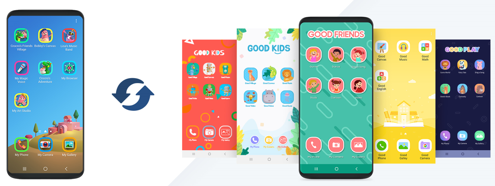
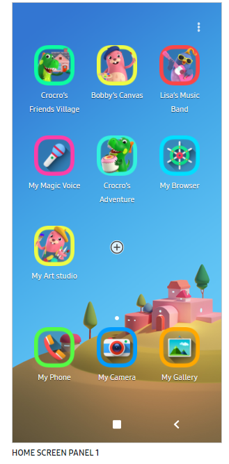
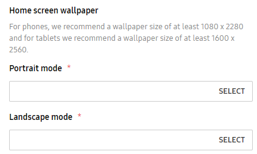
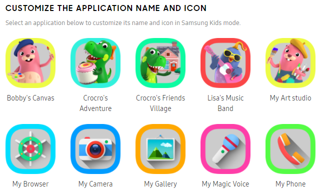
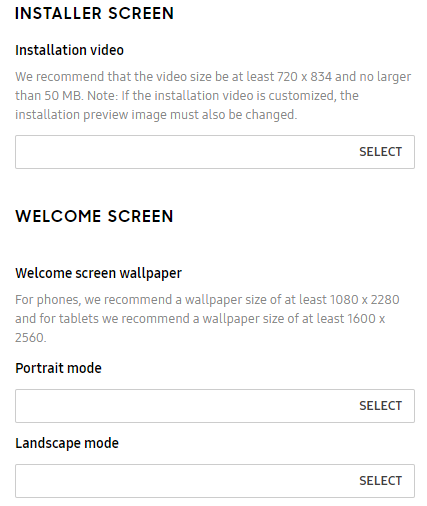
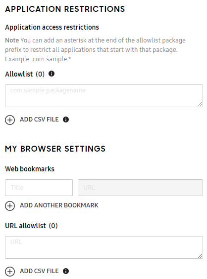
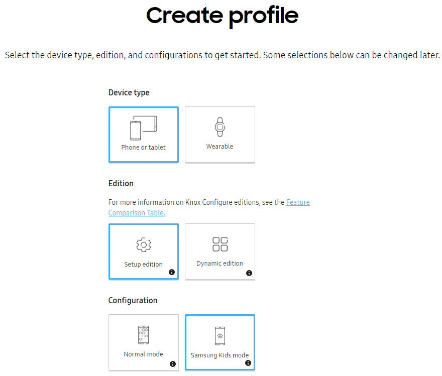
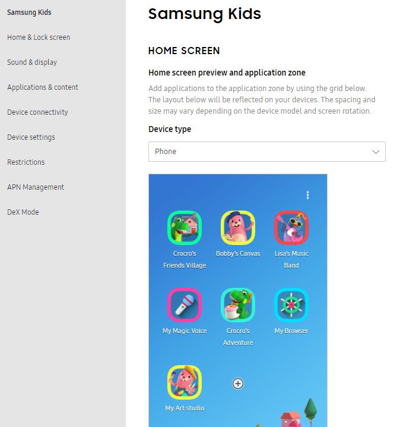

Knox Configure 21.06 release notes
Last updated July 26th, 2023
Support Samsung Kids Configuration
Starting with this release, IT admins can easily customize mobile devices for B2B2C customers to make the devices kid-safe. Samsung Kids (SK) Configuration lets partners create their own version of the Samsung Kids app. IT admins can now easily upload custom data using the KC console to customize the company-branded SK app.
Samsung Kids is pre-installed in all Samsung devices. Users can easily use the feature from the quick access panel, and can set the Samsung Kids icon on the home screen or menu and run the app. Parents or administrators can protect their children from harmful apps or websites through Samsung Kids as well as set a custom playtime limit countdown. Parents can set whether to show apps that are installed in the general environment on Samsung Kids. Additionally, there are special apps and contents targeted specifically for kids that are included in the Samsung Kids environment. To exit from the Samsung Kids environment, the user has to enter the password that was set by parents when setting up SK.

Through the SK Configuration, IT admins can customize the features as follows:
-
Add apps on the Samsung Kids Home screen.
-
Change the layout of the Samsung Kids Home screen.

-
Change the Samsung Kids Home screen wallpaper.

-
Change the native app name or icon.

-
Change the Samsung Kids installer/Welcome screen and Play timeout/Phone contact image.

-
Set App access allowlist.
-
Set Browser web bookmark and URL allowlist.

The process to customize SK for B2B2C devices works as follows:
-
The IT admin creates a SK profile which allows to configure normal and SK items.
Note
SK configuration supports both the setup and dynamic edition. SK supports devices running Android Q OS or higher.

-
If the IT admin wants to upload their own APK and add a new layout for SK, IT admin should upload custom APKs in Application and Widgets.
-
IT admins can configure supported features such as layout, wallpaper, and native app customization. From the KC console guide, the IT admin can easily upload custom resources such as APK, PNG images, and mp4 video.
-
IT admins can configure other features for normal profile out of SK app as well.

-
After setting up the KC configuration in the OOBE environment of the device, the Samsung Kids is automatically launched and a screen allowing the device user to set the PIN code is shown. Parents can now set the PIN code on the device, and after setting up the PIN code, Samsung Kids launches. The parent can use the PIN code to set the playtime up a playtime limit countdown or restrictions of in the Samsung Kids environment or exit from Samsung Kids.
Configure enhanced Kiosk Mode (Multi-app)
The ProKiosk mode in KC allows IT admins to restrict a portion of a device’s functionality to just a specific set of targeted applications. Starting with the Knox service 1.39 release, the IT admins can now set up a Multi-App Kiosk profile, that allows multiple preset applications in the ProKiosk mode. Additionally, the IT admin can use the Multi-App Kiosk mode to:
- Limit device functionality to a single app or a set of apps and a group of settings
- Set up a custom Home screen for use with the Multi-App Kiosk mode
- Specify one or more of the following configuration options:
-
Bookmarks
Note
If the device user clicks a bookmark, the browser opens to the specified URL after clearing the cache and history settings. The device user also does not have access to any other browser options such as Home, Settings, or other tabs.
-
Apps
-
When the Multi-App Kiosk mode is active on the device, the device user cannot manually edit any of the configured information or access any other apps installed on the device.
To use the enhanced Kiosk mode, the IT admin must set up a multiple applications mode profile using the KC portal and push it to devices from the KC console, Profile Create or Detail > ProKiosk mode > Home and Lock screen settings section > Settings list > options available are Single App Kiosk or Multi App Kiosk mode.
Prevention of EE License generation for EE devices after August 2021
Currently, Samsung Knox Portal Customers can generate a Knox Configure EE — also known as EE Legacy License — using SamsungKnox.com. This functionality is being deprecated starting August 2021. Customers can continue to assign EE Legacy Licenses to device models launched before August 2021. When they try to assign an EE Legacy License to device models launched after July 31, 2021, they see an error message informing them that this functionality is not supported.
After July 31, 2021, Knox Suite licenses are replacing EE licenses. As a result, when assigning licenses to EE devices, customers can assign a normal (non-EE) KC license to their devices.
EE device support using existing KC license (Non-EE KC license)
Starting with this release, the non-EE KC license can also be applied to EE devices. This change follows the previously mentioned change that starting August 2021, devices can no longer be assigned EE licenses, and need a normal (non-EE) KC license instead.
Note
Non-EE devices cannot use an EE KC license.
[MSP] Share license key support
Starting with the Knox service 1.39 release, MSP admins can now add, share, and delete KC licenses from the MSP portal so that MSP can manage KC licenses more effectively.
The MSP can now:
-
Generate a KC trial key on the MSP portal to test sharing concept amongst fully managed customers.
-
Enter a KC commercial key on MSP portal to share a key with multiple fully managed customers.
-
Delete a KC trial or commercial key on MSP portal for fully managed customers, when license has expired and no devices are assigned.
-
View the license detail information on MSP portal.
-
Consumption of actual licenses, that is assigning licenses to devices or profiles, is done from customer’s KC portal.
Note
Replacement of licenses on the MSP portal is not available with KCS 1.39.
[IT Admin] Admin Portal Log in page improvement - Apply special Samsung Account log in page
The Knox service 1.39 release adds a new login flow for the KC Admin Portal that is, the Samsung Account’s special login page and results in improving the security of user accounts. This page mandates the use of dual authentication methods for logging in. As a result of this change, when logging in the IT admin has to enter the following policy:
- For the first login of user, the page mandated the use of dual authentication such as security certificate, mobile authentication, one-time password (OTP), or VPN
- Passwords must meet the required complexity level dictated by the system.
- Samsung admins are required to change their password every three months.
Adaptive Brightness On/Off - For not supported device, add tooltips (Phase 1)
When setting the Adaptive Brightness feature to On or Off, IT admins now see a tooltip informing them that this feature is not available on all devices as some device models do not have a light sensor which is necessary to support the auto-adjustment of brightness levels.
Deprecated item - swipe_to_call_or_send_messages
Knox v3.7 or higher, available with the Android R or higher OS, does not support the swipe to call or send messages setting. Starting with Knox service 1.39, this setting is deprecated and is no longer in use. IT admins are informed that this setting is only available only for devices running Knox v3.4 to 3.6.
Back to release notesIs this page helpful?